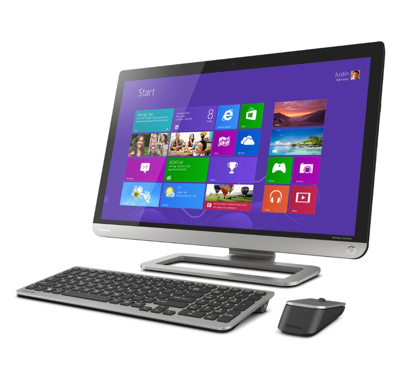
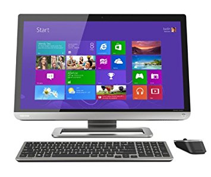

En este módulo se describe el concepto de computador y también su organización interna, los elementos que forman parte de él, el funcionamiento general que tienen y cómo se interconectan.
Se explican los dos tipos de organizaciones principales, Von Neumann y Harvard, y se ven cuáles son las características de cada una de estas organizaciones.
Asimismo, se presentan los dos tipos de computadores que utilizan habitualmente arquitectura Harvard:
 Finalmente, se realiza una explicación breve sobre la evolución de los computadores desde las primeras máquinas electrónicas de cálculo hasta los computadores actuales, y se muestra la organización de los microprocesadores multinúcleo.
| Sistema operativo | Creador |
| Windows | Bill Gates |
| Linux | Linus Torvals |